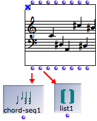
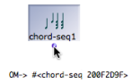
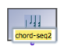
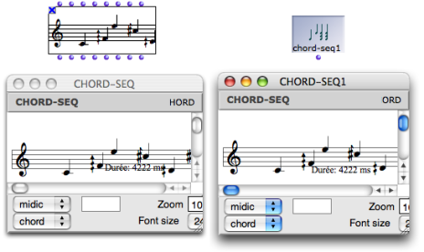
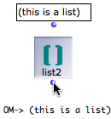
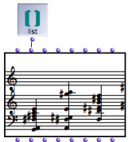
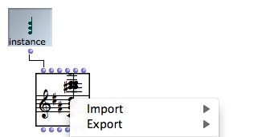
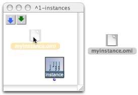

OpenMusic DocumentationHiérarchie de section : OM 6.6 User Manual > Visual Programming II > Instances > Instance Boxes
OpenMusic DocumentationHiérarchie de section : OM 6.6 User Manual > Visual Programming II > Instances > Instance Boxes
Navigation : page précédente | page suivante
Attention, votre navigateur ne supporte pas le javascript ou celui-ci à été désactivé. Certaines fonctionnalités de ce guide sont restreintes.
Instance Boxes
An instance can be materialized out of any output of a factory box, provided this output can return an instance or a list. Creating an instance box is especially significant when done from the "self" outlet of a factory box, which returns the object itself .
There are two types of instance boxes :
- class instances, which are created from objects,
- list instances, which are created from lists.
Procedure

The first ouput of the chord-seq factory box is a chord-seq instance. The second output is a list of pitches.
|
To create an instance box, The corresponding object will appear in the patch editor. |
The resulting box represents a specific object that cannot be reinitialized, but can be used and evaluated again in a patch. This is why this box shows only one "self" outlet. |

|
Renaming Instance Boxes

|
Instances in OM have a name , which can be edited on the instance box. |
Modifying the Instance
The parametric values of an instance box can't be accessed directly in patches. However, they can be accessed and modified with the slots box.
About the Slots Box
Instance Editors
The content of an instance box can be modified like that a factory box.
Double-click on the instance to open its editor.

An instance has the same editor as the factory box it is derived from, and which offers the same edition possibilities.
About Factory Boxes Editors
Some OM Objects Editors
List Instances
List instances are instance boxes containing lists of values instead of a single instance. An instance derived from a list returns its content when evaluated. |

A list can be used for creating an instance box.
|

|
Just like any list, it can be connected to other boxes to create new objects. |
Lists Editor
List instances have a basic editor allowing to get a preview and modify their contents.
More about Instance and List Instance Editors
Storing/Reusing Instances
Instances are a means to save an object within a patch, where it can then be used as a source of data.
Instances can also be used in other patches :
they can be copied
they can saved as global variables[1], which is sometimes more convenient and/or coherent.
About Global Variables
Instance Files
Instances can also be exported and imported as .omi files, to and from any location of your hard drive. The import/export procedure must be done via Factory Boxes.

An instance must be integrated as the content of a factory box, before it is exported.
Importing / Exporting Instances to/from Factory Boxes
Dropping Instance Files in the Patch
You can drag and drop an instance file in a patch editor to create a new instance box directly.

Références :
Global variable
An instance of OM object that has been saved in order to be used in other programs. Global variables are visible from the
Librarywindow and stored as .omi files in theGlobalsfolder of the workspace.
Plan :
Navigation : page précédente | page suivante
A propos...(c) Ircam - Centre Pompidou